Pupil’s Book
Pupil’s Book · School Subjects · pages 6–8
All five activities appear in their original order. English text is transcribed from the images; explanatory notes are separate from the source.
1. Listen and read.
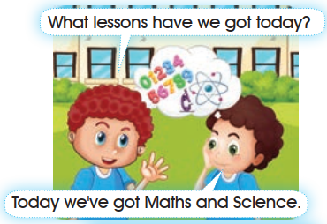
What lessons have we got today?
Today we've got Maths and Science.
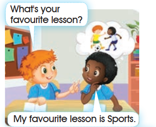
What's your favourite lesson?
My favourite lesson is Sports.
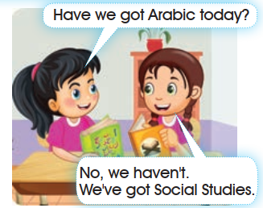
Have we got Arabic today?
No, we haven't.
We've got Social Studies.
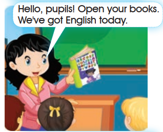
Hello, pupils! Open your books.
We've got English today.
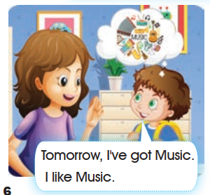
Tomorrow, I've got Music.
I like Music.
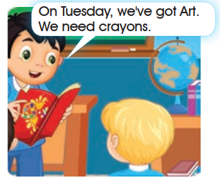
On Tuesday, we've got Art.
We need crayons.
Open the source page · Pupil’s Book · p. 6
This is the original supplied image, shown without redrawing or generation. Open it at full size for review.
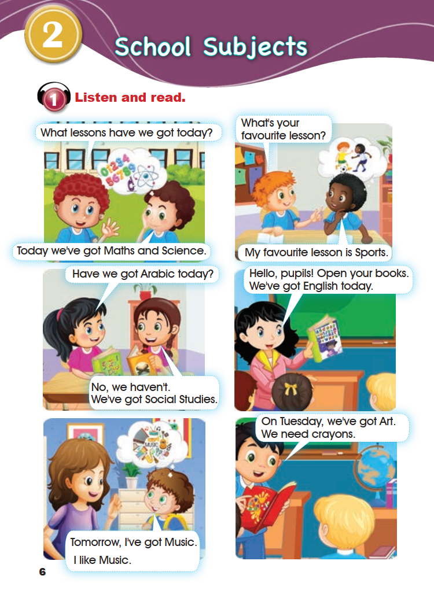
2. Let’s learn!
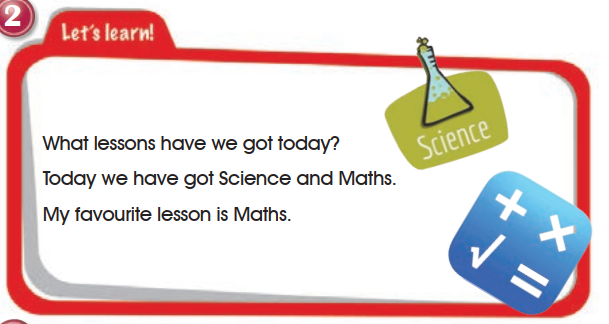
What lessons have we got today?
Today we have got Science and Maths.
My favourite lesson is Maths.
3. Ask and answer.
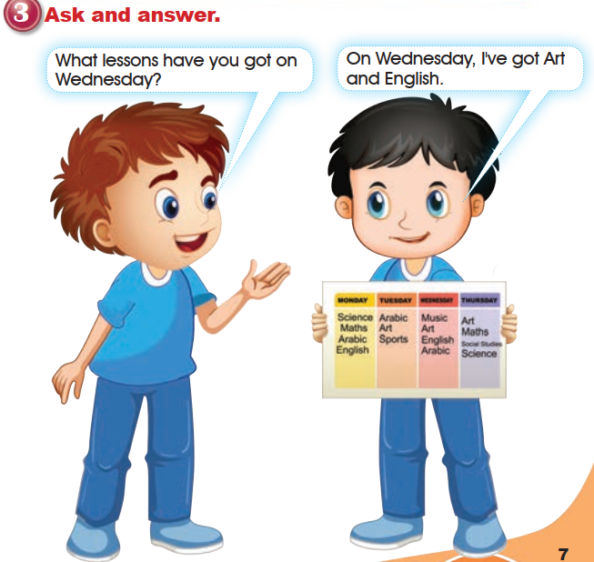
What lessons have you got on Wednesday?
On Wednesday, I’ve got Art and English.
Timetable printed in the source image
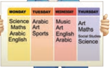
| Monday | Tuesday | Wednesday | Thursday |
|---|---|---|---|
| Science | Arabic | Music | Art |
| Maths | Art | Art | Maths |
| Arabic | Sports | English | Social Studies |
| English | Arabic | Science |
Open the source page · Pupil’s Book · p. 7
This is the original supplied image, shown without redrawing or generation. Open it at full size for review.
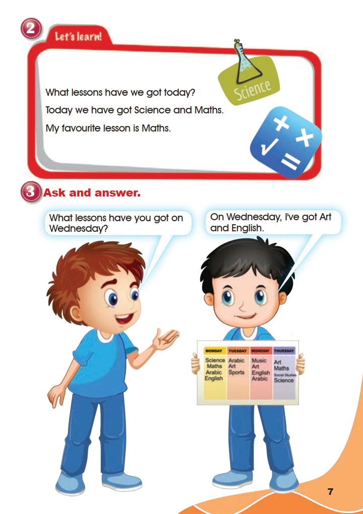
4. Listen and repeat.
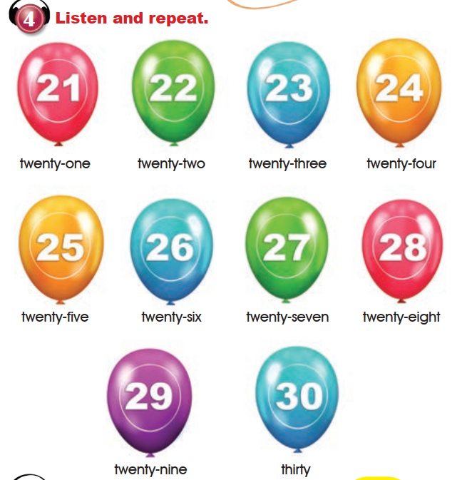
- 21twenty-one
- 22twenty-two
- 23twenty-three
- 24twenty-four
- 25twenty-five
- 26twenty-six
- 27twenty-seven
- 28twenty-eight
- 29twenty-nine
- 30thirty
5. Listen to the following sounds and words, then repeat them.
ou
house
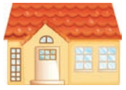
mouse
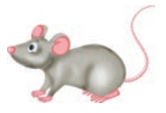
Open the source page · Pupil’s Book · p. 8
This is the original supplied image, shown without redrawing or generation. Open it at full size for review.
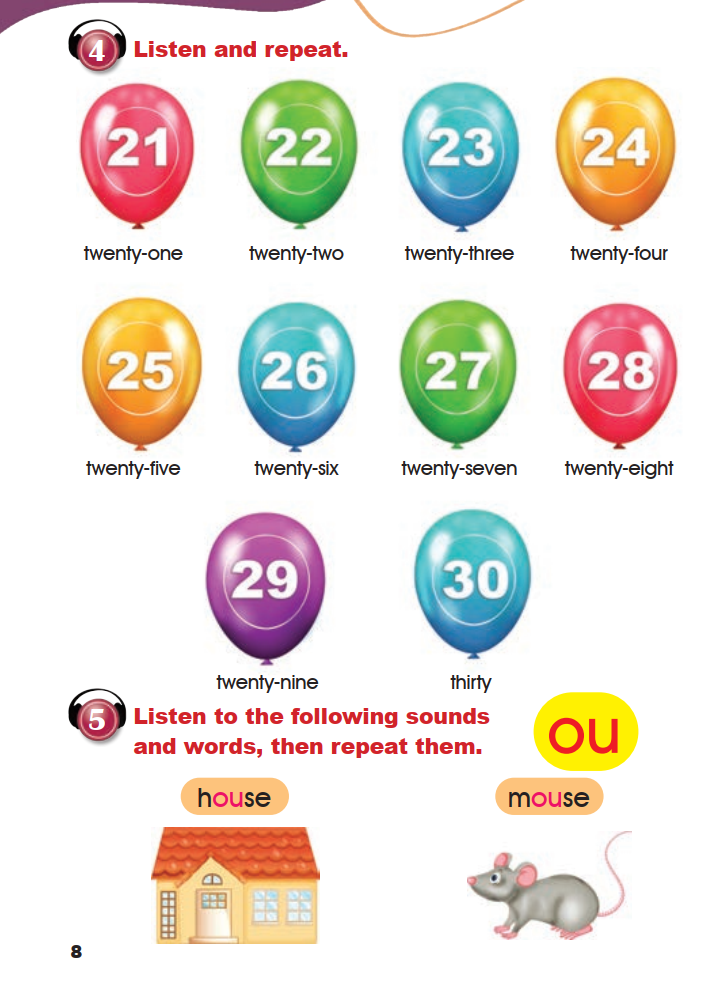